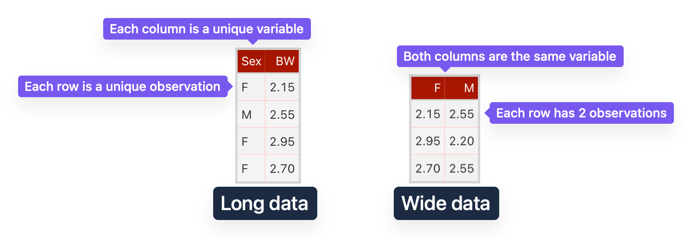
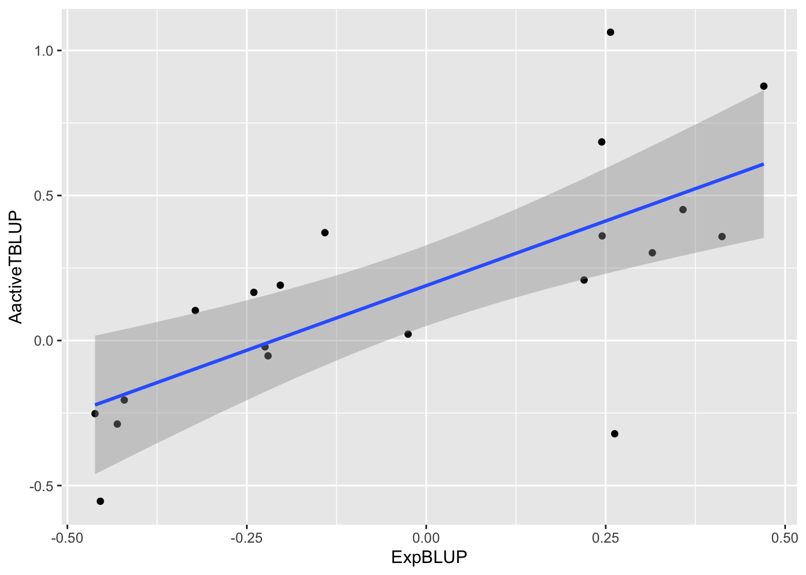
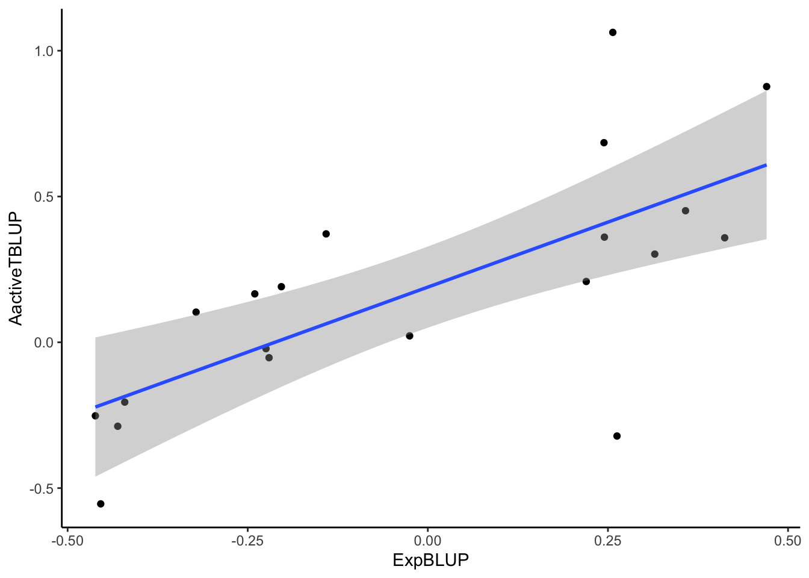
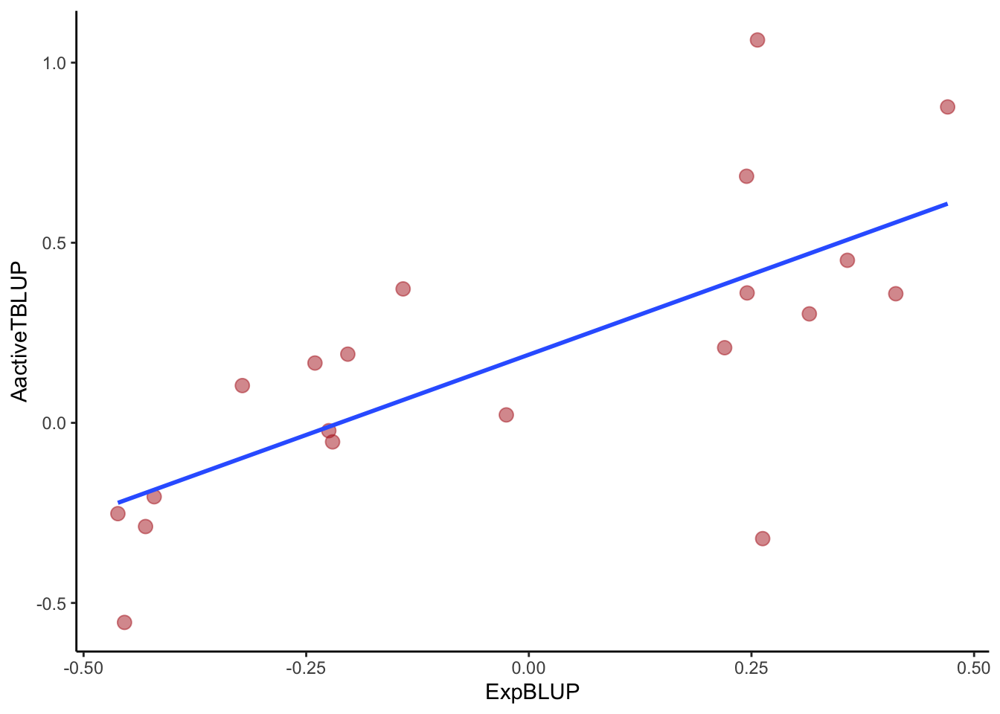

library(readr) # load the readr package
possums_blup <- read_csv("possums-blup.csv") # read the data, store it in an object called possums_blupScatter Plots in R with ggplot2
Cheatsheet
This work is licensed under a Creative Commons Attribution 4.0 International License.
About
A scatter plot is a data visualization that shows the relationship between two continuous variables. It is useful for identifying patterns and outliers. For more than two continuous variables, it may be possible to use colour, size, or shape to represent additional variables, but this can make the plot harder to interpret.
Assumed knowledge
- You know how to install and load packages in R.
- You know how to import data into R.
- You recognise data frames and vectors.
Data structure
Your data should be structured in a way that makes it easy to plot. The ideal structure is long, i.e. one where each column represents a variable and each row an observation (Figure 1). You can either reshape your data in R or move cells manually in a spreadsheet program to achieve the desired structure. For boxplots comparing more than one group of data, a categorical variable representing the group should be present in the data.

Sex is categorical and BW is the measured, continuous response – is preferred over wide data (right), as it makes it easier to manipulate data when plotting.
1 Data
For this cheatsheet we will use part of the possums dataset used in BIOL2022 labs. Two numerical variables are available: ExpBLUP and AactiveTBLUP. The data is available in the file possums-blup.csv.
2 Import data
3 Plot
Use the different plots below to learn how to customise your scatterplot.
1library(ggplot2)
2ggplot(possums_blup, aes(x = ExpBLUP, y = AactiveTBLUP)) +
3 geom_point() +
4 geom_smooth(method = "lm", formula = "y ~ x")- 1
-
Load the
ggplot2package. - 2
-
Create a scatter plot with
ExpBLUPon the x-axis andAactiveTBLUPon the y-axis. - 3
- Add a layer for data points.
- 4
-
Add a layer for the linear regression line, defining the method (
lm) and the formula (y ~ x).

library(ggplot2)
ggplot(possums_blup) +
1 aes(x = ExpBLUP, y = AactiveTBLUP) +
geom_point() +
2 geom_smooth(method = "lm") +
3 xlab("ExpBLUP") +
ylab("AactiveTBLUP") +
4 theme_classic()- 1
-
Define the aesthetics (x and y variables), outside of the
ggplot()function. - 2
- For the linear regression line, you can omit the formula.
- 3
- Add labels for the x and y axes.
- 4
- Change the theme. This is a simple way to standardise the appearance of your plots.
`geom_smooth()` using formula = 'y ~ x'
library(ggplot2)
ggplot(possums_blup) +
aes(x = ExpBLUP, y = AactiveTBLUP) +
geom_point(
1 colour = "firebrick",
2 alpha = .5, size = 3) +
3 geom_smooth(method = "lm", se = FALSE) +
theme_classic()- 1
- Change the colour of the points.
- 2
-
Change the transparency (
alpha) and size of the points. - 3
- Remove the confidence interval band from the linear regression line.
`geom_smooth()` using formula = 'y ~ x'